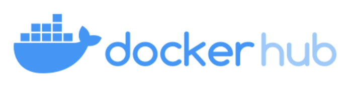
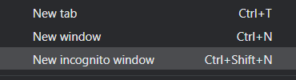
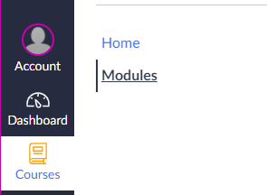
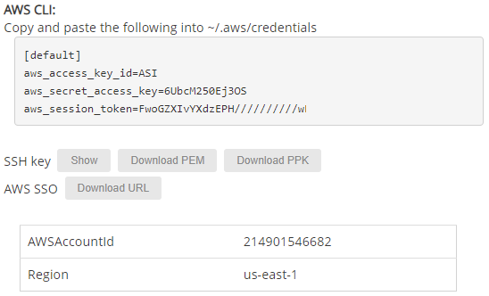
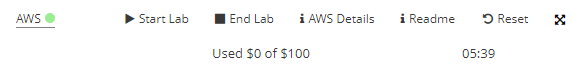
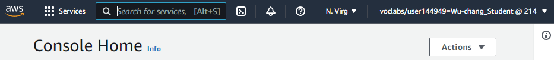
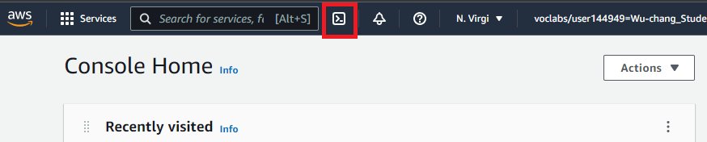
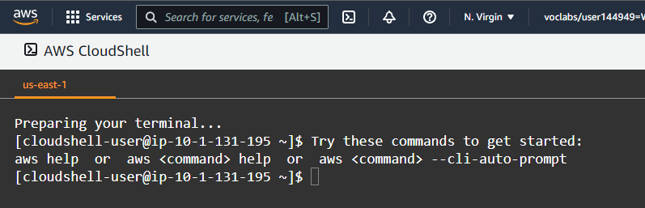
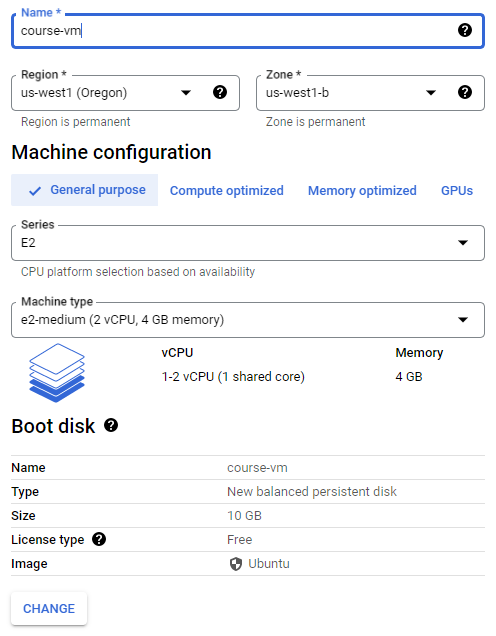

There is a Slack workspace for Computer Science students here at PSU. If you haven't already, create a Slack account, join the workspace at https://pdx-cs.slack.com and add the course channel linked on the course web page. All course communication will be done through this platform; check the pinned section for important updates. Note that the course has a corresponding webpage for more permanent information.
We'll be using GitLab for the course's source control. Create an account via Google using your @pdx.edu email address by visiting https://gitlab.com/users/sign_up.

Upon completion, use the same credentials to login to GitLab. After logging in you should see the following:

Go to the upper right hand corner and click on the dropdown that is your user profile. You should see the option for "Preferences". Click on this option and you'll be taken to a page for customization of your avatar, status, and main settings.

In the left hand column there is an entry for SSH Keys. Select that entry and wait here. We're going to create a local public/private key pair to securely transfer data between the local repository and this remote hosted by GitLab.
SSH Keys
We will now create a local public/private ssh key pair to securely transfer data between a local git repository and this remote hosted by GitLab. For the purposes of this lab, we will use linux.cs.pdx.edu for our local repository location. To add additional machines, you will need to repeat the process below for them.
Log in to linux.cs.pdx.edu and change into the directory where SSH keys are stored:
cd ~/.ssh/
If you have not setup an SSH key before, perform the following
ssh-keygen -t rsa
We're specifying rsa here for clarity, although this is the default encryption method. Hitting enter will create a file named id_rsa which we'll use as an example. You should now have two files containing the key-pair in the ~/.ssh/ directory. One has a .pub extension and is your public key. The other is your private key and should never be revealed.
We will now add this public key to GitLab. Dump the contents of the key out:
cat id_rsa.pub
Then, copy and paste this into the SSH key field on GitLab in your browser. Finally, click "Add Key".
Create Project
Go back to the projects page and create a "New project" that is blank. 
Name the new project via the ProjectName above. Within the project's setup, make sure the repository is marked "Private" and initialize it with a README file.
Invite Instructor and TA as project developers
Next, go to the Settings tab and select members. From here you can add members to your project by typing in their username. Add the instructor and the TA as Developers to your project via their pdx.edu e-mail addresses (e.g. <OdinID>@pdx.edu where OdinID can be found on the course web page), as in the images below.
 Setup client
Setup client
On linux.cs.pdx.edu, set up your name and e-mail address for git.
git config --global user.name "<FirstName> <LastName>" git config --global user.email "<OdinID>@pdx.edu"
Then, clone the repository to your machine and change directories into it.
git clone git@gitlab.com:<GitLab-Username>/<ProjectName>.git cd <ProjectName>
We will now edit our first file and commit its changes to our repository. To do so, bring up the README.md file in an editor. The file is expected to be in the Markdown format. Examine this cheat sheet and add multiple styles of titles and lists to the file. Then, stage the file for addition, commit the file to the local git repository, then push the local commits to the remote version on GItLab.
To add the file to the list of changed files that you want to stage to commit, use the following:
git add README.md
To commit the file that has been staged into the local git repository, use the following:
git commit -m "add README"
Finally, to push the copy of the local repository with the changes over to the remote repository on Gitlab, use the following:
git push -u origin main
.gitignore
It is often the case that you'll have files in your local directory that you do not want added to your repository. To specify that these files should not be included in any commits, git uses a file called .gitignore. Create a .gitignore file that contains files that are common to Python that you do not want to add to your repository.
env/
*.pyc
__pycache__/Add it to the files you wish to commit, commit the file to your local repository, and then push the local repository to its remote.
git add .gitignore git commit -m "Adding .gitignore" git push -u origin main
git basics
Read the first 6 steps of the following link. Note that for this class, you will be substituting Gitlab for GitHub. You will need to become proficient with the following git commands for this course or use an IDE such as VSCode that can perform the operations for you.
git clone: Fetch a copy of a remote repositorygit add: Add a new file and/or directory to local repositorygit commit: Commit changes to local repositorygit push: Merge changes from local repository to a remote one. Implicitly assumes "origin" (place that you retrieved repo from) and "main" (branch)git pull: Merge changes from remote repository to your local one. Implicitly assumes "origin" (place that you retrieved repo from) and "main" (branch)
Initial Lab notebook
To practice the commands, we will create, add, commit, and push an initial lab notebook. Subsequent notebooks should follow this format, replacing the week number.
cd <path_to_your_repository>
mkdir notebooks
touch notebooks/Week0.pdf
git add notebooks
git commit -m "initial notebook"
git push
Visit https://hub.docker.com/ and create an account using your pdx.edu e-mail address. Container submissions will be done via upload to this site.
Go back to your course git repository.
- Create a directory for your first homework:
mkdir hw1 - Create a file at
hw1/dockerhub.txtthat contains only your DockerHub username in it. For example, if my username on DockerHub iswuchangfeng, thenecho wuchangfeng > hw1/dockerhub.txt - Add the directory and files to your repo
git add . - Commit the changes locally
git commit - Then, push the changes remotely
git push
Incognito mode
To avoid applying the coupon you receive to the incorrect account, ensure that these steps are done in an "Incognito" or "Private Browsing" browser window to set up your account.

Then, visit https://console.cloud.google.com and login using your pdx.edu account to enable GCP. If you haven't used GCP yet and do not mind temporarily putting your credit card on the account, apply for the $300 coupon and use it to create a new billing account. Otherwise, wait for the instructor to email you a course coupon.
Create Project
Click on the pdx.edu organization from the console.
Then, click on "New Project"
Create a Google Cloud project with your ProjectName from above. You should be taken to your project's Home page. For your lab notebook, you will need to ensure that all of your screenshots for your Google Cloud labs include your ProjectName.
To examine your Billing account and its usage, go to the Billing page from the console at https://console.cloud.google.com/billing

We will be using AWS in this part of the course. Unfortunately, AWS does not allow students to set up a fully functional AWS account unless they are willing to supply a credit card. Instead, we will use AWS via AWS Academy's Canvas site. You will receive a course invitation from AWS Academy to participate in a class.

Follow its instructions to create an account on Canvas, then login to the site at https://awsacademy.instructure.com/login/canvas. From your Dashboard, choose the course listed and then click on "Modules".


Click on "Modules", then launch the lab. This will bring up the console that can be used to access your course's AWS account.
The course comes with a fixed budget for computing resources. Vocareum allows you to control your AWS account in order to limit its consumption. The main navigation bar is shown below:

- Start Lab: Clicking on this button will turn on your AWS account and its services.
- End Lab: Clicking on this button turns the AWS account off
- AWS: After the lab has been started, clicking on this button will launch the AWS console using your AWS account. Note that the color of the dot denotes whether the the account has been turned on (e.g. red indicates off, yellow indicates transitioning, and green indicates on)
- AWS Details: Clicking on this button gives you access to your AWS account ID, your AWS secret access key information and ssh key information for your labs similar to what is shown below.

- Reset: This deletes your AWS workarea and allows you to bring up a fresh AWS setup.
Click on "Start Lab", wait for the AWS account to be enabled and for the dot next to AWS turn green. Then click on the AWS button to bring up the AWS console.

Notify the instructor immediately if you do not get this screen

When your lab is finished and you have taken the required screenshots, go back to the Vocareum console and click on "End Lab"
Option #1: Cloud Shell
AWS Cloud Shell provides a Linux environment that has the AWS CLI and SDK pre-installed. To launch it, find the icon located at the top of the web console after logging in (outlined in red).

Upon launching Cloud Shell, you should be dropped into an interactive container that has the AWS CLI. Note that the CLI has already been configured with your AWS account credentials so there is no need to manually perform the configuration.

Option #2: Python
One can also install the AWS CLI on any Linux machine via a Python package. To do so on a linuxlab machine, perform the following to install the AWS CLI in a virtual environment using Python's pip.
virtualenv -p python3 env source env/bin/activate pip install awscli
Note that if using your own local Linux machine running Ubuntu, you will need to ensure the proper packages are installed below before performing the commands above.
sudo apt update -y sudo apt install python3 python3-pip virtualenv
Once installed, you will need to configure the CLI with the credentials of the AWS account. Go back to the AWS Academy Lab interface, click on AWS Details, and show the AWS CLI information. Then, type the command below and fill in the credentials based on that information.
aws configure
Note that the command does not support setting the short-term aws_session_token information. To do so, you will need to edit the file that the command creates at ~/.aws/credentials .
One may also use a virtual machine in the cloud to run a Ubuntu VM. To do so, visit the Compute Engine Google Cloud console at https://console.cloud.google.com/compute .
Option #1: Cloud Shell
To launch a VM using Cloud Shell, go to the web console and click on the Cloud Shell icon as shown:

Cloud Shell consists of a container with the Google Cloud SDK pre-installed. As part of the SDK, the gcloud command-line interface is included. The command is similar to other cloud CLIs such as aws in that it supports sub-commands that specify which cloud service is being accessed. For example, the command gcloud compute create instances will create a virtual machine instance based on the parameters provided. Use the command below to instantiate the VM.
gcloud compute instances create course-vm \
--image-family=ubuntu-2204-lts \
--image-project=ubuntu-os-cloud \
--zone=us-west1-b \
--machine-type=e2-mediumOption #2: Web console
One can also launch VMs via the web console. Navigate to the Compute Engine service at https://console.cloud.google.com/compute and create an instance. Configure the name, region, zone, and boot disk in the UI, then launch the instance.

We will now setup a remote desktop on the Compute Engine using the Remote Desktop Protocol (RDP) in order to enable a graphical interface to the VM.
Connect to instance
To connect to the instance from Cloud Shell, you can run the command below:
gcloud compute ssh course-vmAlternatively, you can also connect via the web console. To do so, navigate to the VM instances on Compute Engine, then click on "ssh" to bring up a shell session on it.

Setup
On the VM, install the course's development tools.
sudo apt update sudo apt install python3-pip python3-dev python3-venv git -y
Then, install docker and its packages. Add yourself to the docker group so that you're able to run the docker commands without sudo.
sudo apt install docker.io -y sudo usermod -a -G docker $(whoami)
Next, install the graphical software packages.
sudo apt install xfce4 xfce4-goodies xrdp -yCheck that the xrdp daemon is enabled and running.
sudo systemctl status xrdpIf not, start it.
sudo systemctl start xrdpOur RDP setup will require a username and password to authenticate. As Compute Engine instances typically perform authentication via OAuth2 and ssh keys, we will need to set a password for our account on the VM. To do so, run the following to set your account password on the VM for your username.
sudo passwd $USERInstall a web browser
If you wish to use a web browser on this VM, you can install Firefox directly.
sudo apt install firefox -yIf you prefer Chrome, then install Google's signing key, add Google's repository to your system, and then install the browser.
wget -q -O - https://dl.google.com/linux/linux_signing_key.pub | sudo gpg --dearmour -o /usr/share/keyrings/google_linux_signing_key.gpg
sudo sh -c 'echo "deb [arch=amd64 signed-by=/usr/share/keyrings/google_linux_signing_key.gpg] http://dl.google.com/linux/chrome/deb/ stable main" > /etc/apt/sources.list.d/google.list'
sudo apt update
sudo apt install google-chrome-stable -yConnect via RDP
On your local machine, connect to the VM's External IP address (shown above in the web console) using an RDP client. You may utilize clients that are built into the browser (e.g. Chrome Remote Desktop extension) or native clients on Windows (Remote Desktop Connection), MacOS (Microsoft Remote Desktop), or Linux (FreeRDP or remmina) to connect to the VM.

Then, login using your username and the password you set for it to bring up a graphical desktop on the VM.
Stop the VM
In order to save costs while keeping the machine image around so that it can be started later, exit out of the session and stop the VM. This can be done via the UI or via the command-line in Cloud Shell via:
gcloud compute instances stop course-vm